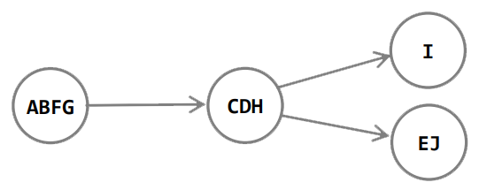

A mélységi keresés egy gráfbejáró algoritmus. A gráfban a lehető
legmélyebben keresünk, azaz a gráf összes élét és csúcsát érintjük. A bemeneti gráf lehet
irányított vagy irányítatlan, összefüggő vagy nem összefüggő is. A mélységi keresés gyakran
egy másik algoritmus eljárása szokott lenni.
Keresés menete:
A mélységi keresés során az utoljára elért, új kivezető élekkel rendelkező $v$
csúcsból még nem vizsgált éleket derítjük fel. Ha a $v$ csúcshoz tartozó összes élt
megvizsgáltuk, akkor a keresés visszalép, és megvizsgálja annak a csúcsnak a kivezető éleit,
amelyből $v$-t elértük. Ezt addig folytatja, amíg el nem éri az összes csúcsot, amely elérhető az
eredeti kezdő csúcsból. Ha marad olyan csúcs, amelyet nem értünk el, akkor ezek közül valamelyiket
kiválasztjuk, mint új kezdő csúcsot, és az eljárást ebből kiindulva megismételjük. Ezt egészen addig
folytatjuk, amíg az összes csúcsot el nem érjük.
A végeredmény egy mélységi feszítőfa vagy egy mélységi feszítőerdő
lesz, attól függően, hogy a gráf összefüggő volt-e. Ahány különböző kezdőcsúcsból indítottunk
keresést, annyi mélységi fát hoz létre az algoritmus. Együtt ezek egy mélységi feszítőerdőt fognak
alkotni.
A keresés eredményét befolyásolja, hogy milyen sorrendben vizsgáljuk meg az
aktuális csúcsot követő csúcsokat, de alapvetően ekvivalens eredményeket kapunk.
Csúcsok állapotai:
A bejáró algoritmusok, hogy ne „körözzenek” gyakran színezést használnak.
Így nem „látogathatunk meg” többször egy csúcsot. A szélességi kereséshez hasonlóan itt is színezzük
a csúcsokat, ezzel tartjuk számon egy csúcs állapotát.
- fehér még el nem ért csúcs (kezdetben mindegyik fehér)
- szürke elértük a csúcsot és a belőle elérhető csúcsokat járjuk be éppen
- fekete befejeztük a csúcsot
A mélységi keresés minden csúcshoz időpontot rendel. A $time$ globális változót
használjuk az időpontok feljegyzéséhez. Minden csúcshoz két időpont tartozik:
- $d$ a csúcs elérési ideje, mikor értük el
- $f$ a csúcs befejezési ideje, mikor fejeztük be
Ezek az időpontok $1$ és $2 \cdot |V|$ közötti egész számok, hiszen minden csúcsot
pontosan egyszer érünk el, illetve hagyunk el. Továbbá minden csúcsra igaz lesz, hogy az elérési
ideje kisebb, mint a befejezési ideje.
Élek osztályozása:
A bemeneti gráf éleit osztályokba sorolhatjuk. Az élek osztályozását
felhasználhatjuk a gráfra vonatkozó fontos információk meghatározására.
4 féle élt különböztetünk meg. Legyen $(u,v)$ egy éle a gráfnak:
- Fa-él ( $\Rightarrow$ ) a mélységi erdő egyik éle
- Vissza-él ( $\xrightarrow{V}$ ) $v$ az $u$ őse egy mélységi fában, irányított gráfokban
előforduló hurokéleket is visszaéleknek tekintjük
- Előre-él ( $\xrightarrow{E}$ ) $v$ az $u$ leszármazottja egy mélységi fában
- Kereszt-él ( $\xrightarrow{K}$ ) $u$ és $v$ két olyan csúcs, amelyek ugyanannak a
mélységi
fának két különböző ágán vannak, vagy két különböző mélységi fában találhatók
Élek felismerése:
- Fa-él ( $\Rightarrow$ ) fehér csúcsba megyünk
- Vissza-él ( $\xrightarrow{V}$ ) szürke csúcsba megyünk
- Előre-él ( $\xrightarrow{E}$ ) fekete csúcsba megyünk és $d(u) < d(v)$
- Kereszt-él ( $\xrightarrow{K}$ ) fekete csúcsba megyünk és $d(u) > d(v)$
(Irányítatlan gráf esetén előfordulhat, hogy az osztályozás nem egyértelmű,
ugyanis $(u, v)$ és $(v, u)$ valójában ugyanaz az él. Az él osztálya az első olyan lesz az
osztályozási listából, amelybe besorolható. Irányítatlan gráfok mélységi keresése során nem találunk
előre-élt, illetve kereszt-élt.)
Működése:
A csúcsokat konvenció szerint $abc$ sorrendben vagy indexek szerint növekvően
dolgozzuk fel. Sorrendben vesszük az első csúcsot, ami még fehér. Növeljük a $time$ változó értékét
(most 1) és beállítjuk a csúcs elérési idejét a $time$ változó értékére. Ezután beszínezzük szürkére
a csúcsot. Utána vesszük sorrendben a gyerekeit. Ha a gyereke fehér, akkor fa él, ha szürke visszaél
és így tovább. A gyereken is megcsináljuk az előző lépéseket, növeljük a $time$ változó értékét
(most 2) és beállítjuk a csúcs elérési idejét a $time$ változó értékére. Ezután beszínezzük szürkére
a csúcsot. Utána vesszük sorrendben a gyerekeit. Ha egy csúcsnak nincs több gyereke, befejezzük.
Növeljük a $time$ változó értékét és beállítjuk a csúcs befejezési idejét a $time$ változó értékére
és visszalépünk az ősére.
Ha a kezdőcsúcsot is befejeztük, akkor létrejött egy mélységi feszítőfa és az
algoritmus keres egy újabb fehér csúcsot és kezdődik az egész elölről. Akkor van vége az
algoritmusnak, ha már nincs több fehér csúcs.
Lépések összefoglalva:
- Elérünk egy fehér csúcsot.
- Növeljük a $time$ változó értékét.
- Beállítjuk a csúcs elérési idejét a $time$ változó értékére.
- Szürkére színezzük a csúcsot.
- Vesszük sorrendben a gyerekeit.
- Ha gyereke fehér, fa él, ha szürke, visszaél stb.
- Miután végéig néztük az összes gyerekét növeljük a $time$ változó értékét, és beállítjuk a csúcs
befejezési idejét a $time$ változó értékére.
- Feketére színezzük a csúcsot és visszalépünk a szülőjére.
- Ha a kezdőcsúcsot is befejeztük, keresünk egy újabb fehér csúcsot és kezdődik az egész elölről.
Műveletigény:
- $n = |G.V|$ (csúcsok száma), $m = |G.E|$ (élek száma)
- $mT(n, m), MT(n, m) \in \Theta(n+m)$
Gyakorlati alkalmazása:
A mélységi keresés felhasználható kör detektálására, DAG tulajdonság
ellenőrzésére, topologikus rendezésre, erősen összefüggő komponensek és irányított gráfok félig
összefüggőségének meghatározására.
DAG (directed acyclic graph) tulajdonság:
A $G$ irányított gráf DAG, ha nem tartalmaz irányított kört, vagyis a
mélységi keresés során nem találtunk benne visszaélt.
Topologikus rendezés:
Irányított gráfoknak pontosan akkor van topologikus rendezése, ha nincs a
gráfban irányított kör, azaz DAG tulajdonságú. Irányított gráf topologikus rendezése alatt a
gráf csúcsainak olyan sorba rendezését értjük, amelyben minden él egy-egy később jövő csúcsba mutat.
Egy gráf topologikus rendezését elképzelhetjük úgy is, hogy a gráf csúcsait egy vízszintes vonal
mentén helyezzük sorba, és az irányított élek balról jobbra mutatnak. Több topologikus rendezése is
lehet egy gráfnak.
Egy lehetséges topologikus rendezést kapunk, ha a mélységi bejárás során kapott
befejezési idők szerint csökkenő sorrendbe rakjuk a csúcsokat. Ezt csinálhatjuk
többféleképpen pl.: ha befejeztünk egy csúcsot beszúrjuk egy láncolt lista elejére, így csökkenő
sorrendet kapunk vagy befejezéskor egy verembe rakjuk az érintett csúcsot, és a végén ezen verem
elemeit írjuk ki.
A topologikus rendezés elvégezhető $\Theta (V + E)$ időben, hiszen a mélységi
keresés ideje $\Theta(V + E)$, és minden csúcs $O(1)$ idő alatt beszúrható a láncolt lista elejére.
A topologikus rendezést sok féleképpen meghatározhatjuk, akár DFS nélkül is.
Ebben az esetben a befokok segítségével fogjuk ezt megtenni.
Először meghatározzuk a csúcsok befokait (hány él vezet beléjük). Utána
kiválasztunk egy csúcsot, aminek a befoka $0$, majd berakjuk a rendezésbe. Ilyen csúcsot mindig tudunk
találni, ha a gráf DAG. Majd töröljük a kiválasztott csúcsot, az éleivel együtt. Csökkentsük ennek
alapján a többi csúcs befokát. Ezt ismételjük, amíg el nem fogynak a csúcsok.
Erősen összefüggő komponensek (Kosaraju algoritmus):
A mélységi bejárás egy másik klasszikus alkalmazása egy irányított gráf erősen
összefüggő komponenseinek meghatározása. Sok algoritmus a bemeneti gráfot első lépésben erősen
összefüggő komponensekre bontja, így gyakran az eredeti feladat részfeladatokra osztható az erősen
összefüggő komponenseknek megfelelően.
Egy irányított gráf (vagy annak egy komponense) erősen összefüggő, ha
minden $u, v$ csúcsára igaz, hogy van irányított út $u$-ból $v$-be és $v$-ből $u$-ba is.
Futtassuk le a mélységi bejárást a gráfra. Tegyük verembe a csúcsokat
befejezéskor, hasonlóan a topologikus rendezéshez. Készítsünk egy olyan gráfot, ami az eredeti
transzponáltja, (azaz ugyanazok a csúcsok, de fordított irányúak az élek). Futtassuk le újra a
mélységi bejárást, de most a transzponált gráfon. A csúcsokat kifejezetten a verembeli sorrend
alapján válasszuk meg. Azaz kezdjük a veremtető csúcsával, és amikor a $visit()$ függvény teljesen
visszatér, folytassuk a verem legfelső még fehér csúcsával. A második bejárás szerint egy mélységi
fába tartozó csúcsok definiálnak egy erősen összefüggő komponenst. Akkor kezdünk új mélységi fát,
amikor a rekurzió visszatér a $dfs()$ ciklusába és új csúcsot veszünk ki a veremből. Vigyázat, bár a
transzponált gráf szerint végezzük a második DFS-t, de nyilván a kapott komponensek az eredeti
gráfra vonatkoznak.
Irányított gráf félig összefüggő:
Egy irányított gráf félig összefüggő, ha minden $u, v$ csúcsára igaz, hogy
van irányított út $u$-ból $v$-be vagy $v$-ből $u$-ba. Ha $u$ és $v$ között van oda-vissza út, az is
elfogadható.
Határozzuk meg a gráf erősen összefüggő komponenseit. Ebből készítsük el a
komponensgráfot, azaz az erősen összefüggő komponenseket vonjuk össze egy csúcsba, a köztük
levő éleket hagyjuk el, a belőlük kimenő/bemenő éleket tartsuk meg egyszeres számossággal.

Ha van két olyan komponens, ami között nincs út, biztosan nem lesz félig
összefüggő a gráf. Az algoritmus topologikus rendezéssel határozza meg, hogy a gráf félig
összefüggő-e. Mindig csak egy komponens befoka lehet $0$. Ha ezt elhagyjuk, megint csak egy
komponensnek lehet $0$ a befoka. Ezt folytatjuk, amíg el nem hagyjuk az összes komponenst. Ha kettő
vagy több komponens befoka lesz $0$, akkor nem félig összefüggő a gráf.